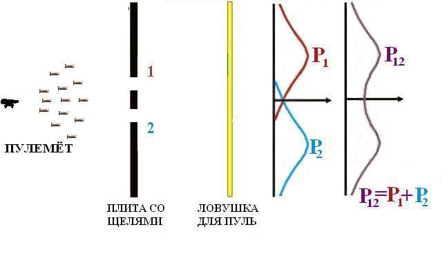

Двухщелевой эксперимент.
Возьмем пулемет и мысленно проведем эксперимент, показанный на рис. 1.
Рис. 1
Пусть пулемет выпускает пули веером, направление полета которых заранее неизвестно. Перед пулеметом стоит броневая плита, а в ней проделаны две щели, через которые пули свободно проходят. Далее стоит «детектор» — любая ловушка, в которой застревают все попавшие в нее пули. По окончании эксперимента можно пересчитать число пуль, застрявших в ловушке, на единицу ее длины и разделить это число на общее количество выпущенных пуль. Или на время стрельбы, если скорость стрельбы считать постоянной. Эту величину — число застрявших пуль на единицу длины ловушки в окрестности некоторой точки Х, отнесенное к полному числу пуль, назовем вероятностью попадания пули в точку Х. Заметим, что можно говорить только о вероятности — нельзя сказать определенно, куда попадет очередная пуля. И даже попав в дыру, она может срикошетить от ее края и уйти вообще неизвестно куда.
Мысленно проведем три опыта: первый — когда открыта первая щель, а вторая закрыта; второй — когда открыта вторая щель, а первая закрыта. И, наконец, третий опыт — когда обе щели открыты.
Результат первого «эксперимента» показан на том же рисунке, на графиках. Ось вероятности в нем отложена вправо, а координата — снизу вверх. На первом графике показаны распределение вероятности P1 попавших в детектор пуль при открытой первой щели, и распределение вероятности P2 попавших в детектор пуль при открытой второй щели. На втором - вероятность попадания в детектор пуль P12 при обеих открытых щелях. Сравнив величины P1, P2 и P12, можно сделать вывод, что вероятности просто складываются,
P1 + P2 = P12.
Итак, для пуль воздействие двух одновременно открытых щелей складывается из воздействия каждой щели в отдельности.
Представим себе такой же опыт с электронами, схема которого показана на рис. 2.
Рис. 2
Возьмем теперь не пулемёт, а источник электронов. Прошедшие через щели электроны можно регистрировать различными методами: с помощью сцинтиллирующего экрана, попадание электрона на который вызывает вспышку света, фотопленки или с помощью счетчиков различных типов, например, счетчика Гейгера.
Результаты подсчетов в случае, когда одна из щелей закрыта, вполне предсказуемы и очень похожи на итоги пулеметной стрельбы (см. первый график). А в случае, когда обе щели открыты, получаем совершенно неожиданную кривую P12. Она явно не совпадает с суммой P1 и P2. Получившуюся кривую называют интерференционной картиной от двух щелей.
В чем же причина? Если исходить из гипотезы, что электрон проходит либо через щель 1, либо через щель 2, то в случае двух открытых щелей должна получиться сумма вкладов от одной и другой щели, как это имело место в опыте с пулеметной стрельбой. Вероятности независимых событий складываются, и в этом случае получилось бы P1 + P2 = P12. Во избежание недоразумений отметим, что графики отражают вероятность попадания электрона в определенную точку детектора. Если пренебречь статистическими ошибками, эти графики не зависят от полного числа зарегистрированных частиц.
Возможно, мы не учли какой-нибудь существенный эффект, и суперпозиция состояний (то есть одновременное прохождение электрона через две щели) здесь совсем не при чем? Может быть, очень мощный поток электронов, и разные электроны, проходя через разные щели, как-то искажают движение друг друга? Для проверки этой гипотезы надо модернизировать источник электронов так, чтобы электроны вылетали из него достаточно редко. Скажем, не чаще, чем раз в полчаса. За это время каждый электрон пролетит все расстояние от источника до детектора и будет зарегистрирован. Так, никакого взаимного влияния летящих электронов друг на друга не будет.
После модернизации источника электронов и проведения серии экспериментов оказалось, что результат остался неизменным.
Но, может быть, электроны каким-то образом блуждают от отверстия к отверстию и только потом достигают детектора? Это объяснение также не подходит: на кривой P12 при двух открытых щелях есть точки, в которые попадает значительно меньше электронов, чем при любой из открытых щелей. И наоборот, есть точки, вероятность попадания электронов в которые более чем вдвое превышает вероятность попадания электронов, прошедших через каждую щель по отдельности.
Стало быть, утверждение о том, что электроны проходят либо сквозь щель 1, либо сквозь щель 2, неверно. Они проходят через обе щели одновременно. И очень простой математический аппарат, описывающий такой процесс, дает абсолютно точное согласие с экспериментом, показанным на втором графике.
Если подойти к вопросу более строго, то утверждение, что электрон проходит одновременно через две щели, неверно. Понятие «электрон» можно соотнести только с локальным объектом («проявленным» в точке состоянием), здесь же мы имеем дело с квантовой суперпозицией различных компонент волновой функции. Дебройлевская волна каждого отдельного электрона проходит одновременно через оба отверстия. Как известно, поверхность, окружающая источник колебаний, все точки которой имеют одинаковые фазы колебаний, называется фронтом волны. В свою очередь все точки поверхности, через которые проходит фронт волны (щель один и щель два) в определённый момент времени, следует рассматривать как источник вторичных волн. В результате их наложения и возникает интерференция.
Чем же отличаются пули от электронов? С точки зрения квантовой механики — ничем. Только, как показывают расчеты, интерференционная картина от рассеяния пуль характеризуется столь узкими максимумами и минимумами, что никакой детектор их зарегистрировать не в состоянии. Расстояния между этими минимумами и максимумами неизмеримо меньше размеров самой пули. Так что детекторы будут давать усредненную картину, показанную сплошной кривой на рис. 1.
Теперь внесем такие изменения в эксперимент, чтобы можно было «проследить» за электроном, то есть узнать, через какую щель он проходит. (рис. 3). Установим “прозрачный” детектор, который назван так, потому что не оказывает никакого влияния на движение электронов. В этом случае, если “прозрачный” детектор регистрирует прохождение электрона через щель 2, мы будем знать, что электрон прошел через эту щель, а если этот детектор не дает сигнала, а основной детектор электронов дает сигнал, то ясно, что электрон прошел через щель 1. Можно поставить и два прозрачных детектора — на каждую из щелей, но это никак не скажется на результатах опыта. Конечно, любой детектор, так или иначе, исказит движение электрона, но будем считать это влияние не очень существенным. Гораздо более важен сам факт регистрации того, через какую из щелей проходит электрон.
Ррис. 3
Результат эксперимента показан на рис. 3, качественно он ничем не отличается от опыта с пулеметной стрельбой. Таким образом выяснилось, что, когда на электрон смотрят и фиксируют его состояние, то он проходит либо через одно отверстие, либо через другое. Суперпозиции этих состояний нет! А когда на него не смотрят, то электрон одновременно проходит через две щели, и распределение частиц на экране совсем не такое, как тогда, когда мы на них смотрят! Так, электрон как бы “чувствует”, что за ним наблюдают, и перестаёт проявлять волновые свойства. Выходит, наблюдение как бы «вырывает» объект из совокупности неопределенных квантовых состояний и переводит его в проявленное, наблюдаемое, классическое состояние.
Может быть, все это не так, и дело только в том, что прозрачный детектор слишком сильно искажает движение электронов? Проведя дополнительные опыты с различными детекторами, по-разному искажающими движение электронов, мы заключаем, что роль этого эффекта не очень существенна. Существенным оказывается только сам факт фиксации состояния объекта! Таким образом, если измерение, проведенное над классической системой, может и не оказать никакого влияния на ее состояние, для квантовой системы это не так.